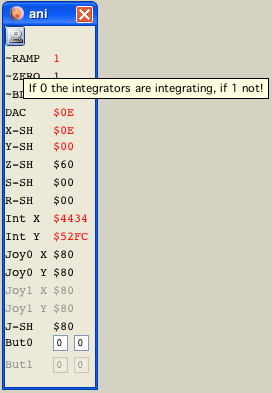

ani window
Well - also straight forward... all analog settings are shown.
Some tooltips enhance the show...
Why?
You might say what is that panel usefull for, there is already a VIA panel with the same information. Well that is not true!
Here you see the values of the actual analog vectrex parts. On the VIA panel "only" the via ports and registers are shown. With the implementation of delays, these values can differ. Usually the analog values are set a few cycles later than the via counterparts!
On the bottom you can see the joystick input and output lines (differentiated between the two states), you can - by using a popup window - place breakpoints on these.